Align a shape to a curve
In the Subdivision Modeling environment, you can use the Align to Curve command to fit selected vertices to one or more curves that you interactively draw or select from an existing sketch. Both methods are explained here.

The Align to Curve command topic provides guidelines for creating a subdivision shape, selecting vertices, and determining whether you want to use a gesture or a previously created sketch.
Fit a subdivision shape to a curve
Use this basic procedure with the Align to Curve command when you want to fit a subdivision shape to a curve by drawing a simple free-form curve or by selecting a previously defined sketch.
When using the Align to Curve command, it is easiest to work on orthographic views or views that are parallel to the faces of the subdivision model cage.
-
Choose the Surfacing tab→Subdivision Modeling command , and then create a basic subdivision shape.
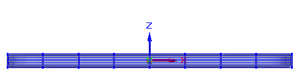
-
If you want to use a predefined sketch instead of free-form gestures, use the Curve command or the 3D Curve command to draw one or more sketch curves, and use PathFinder to show them in the graphics window.
This example shows a single curve.
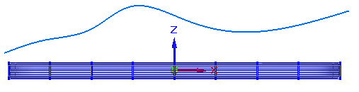
-
Select the Home tab→Modify group→Align to Curve command
 .
. -
On the command bar, the Vertices step is active. Click one or more vertices on the subdivision shape that you want to align to the curve, or use fence selection to select many vertices at once. Click Accept on the command bar to continue.
Example:Because this curve extends the length of the subdivision shape, all the vertices in the top row were selected.

-
The Alignment Direction step is active so you can specify the direction to move the selected vertices. Click a horizontal or vertical edge on the subdivision shape, or click an axis, or an element on a secondary body in the document.
The double-sided red vector indicates the alignment direction. To use the direction normal to the curve, press N. Click Accept or right-click or press Enter to continue.
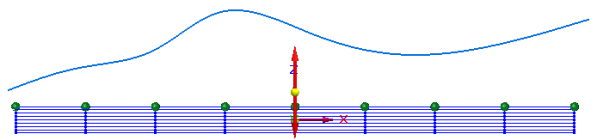
-
The Curves step is active, and the view plane matching the selected vector is locked and displayed for reference. The length of the curve you gesture or select in this step determines the number of selected vertices that are moved. If the curve is above the subdivision shape, the points move up to the curve. To remove material from the shape instead of adding it, draw a sketch across the body.
Do any of the following to provide input to the Curves step.
-
To select a previously created sketch, click the sketch curve displayed on the view plane.
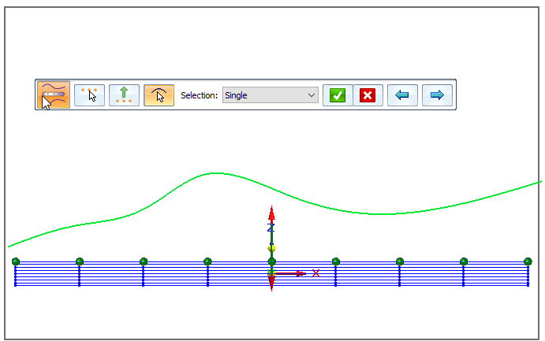
-
Click several points to create a curve through them. Right-click finishes the curve. Any selected, eligible vertex points are moved to the curve.
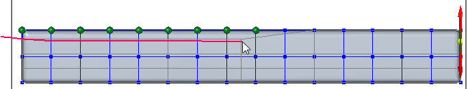
-
To gesture a curve on this plane, click+drag, releasing the mouse button to end the curve. Any selected, eligible vertex points are moved to the curve along the specified vector when you release the mouse button. Click+drag to gesture the next sketch curve as needed.
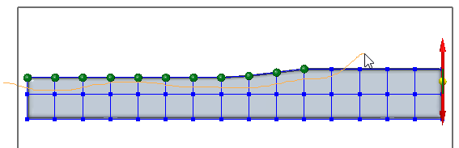
When you select a previously created sketch instead of gestures, the vertex points do not move until you click Accept.
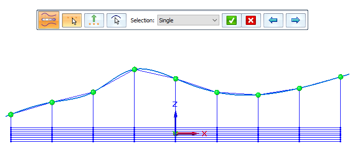
-
-
Continue adjusting the shape using the command bar:
-
While the Curves step is active, you can click the Back and Forward buttons to undo and redo each alignment of the shape to the curve until you achieve the shape you want.
-
Click any of the step buttons to change the vertex selection, alignment direction, or to draw more curves.
-
-
Press Enter or right-click to finish the Curves step.
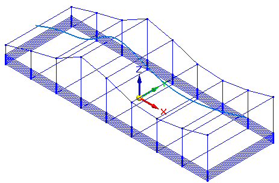
-
The command restarts at the Vertices step. Press Esc to exit the command.
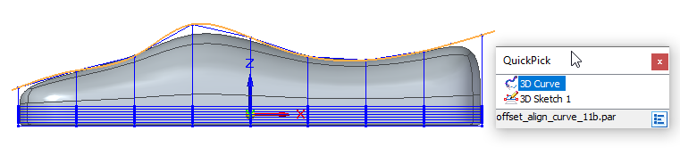
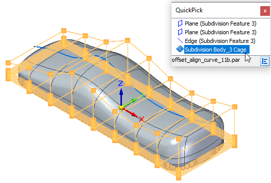
Align to a curve matching an existing shape
If using free-form gestures to define the curves does not provide enough precision, you can use this workflow with the Align to Curve command to match your subdivision body to an existing shape template sketch.
-
Insert a sketch or image of the object you want to model into a part or sheet metal document.
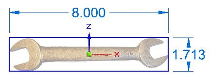
-
Sketch the outline of the design using the Curve or 3D Curve command, or draw a series of sketches that can be applied one at a time to more complex shapes.
You achieve better results by drawing a series of shorter sketch curves than by sketching one continuous curve.
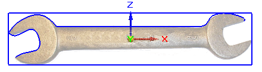
The resulting image and sketch are listed in PathFinder in the Sketches collector and are selectable using QuickPick. You can show and hide different elements as you work.
-
Choose the Surfacing tab→Subdivision Modeling command, and then create the subdivision shape.
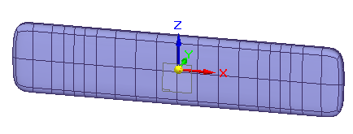
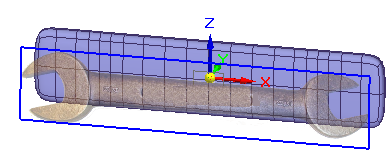
-
Select the Home tab→Modify group→Align to Curve command
. -
On the command bar, the Vertices step is active. Click one or more vertex points on the subdivision cage that you want to align to the curve, or use fence selection to select all the vertices on a cage face. To remove an unwanted vertex from the selection set, use Shift+click.
Vertices can be selected from multiple cages and do not have to lie on the same plane.
Click Accept on the command bar to continue.
-
The Alignment Direction step is active for you to specify the direction to move the selected vertices. Click a horizontal or vertical element on the subdivision shape or on the base coordinate system that matches the view orientation of the sketch you created previously.
Click Accept to continue.
-
The Curves step is active. Click a previously created curve sketch that matches the alignment direction. If you created multiple, smaller sketches that lie on the same plane, then set the Selection list to Chain, and click all the sketches.
Click Accept to complete the curves step.
-
Press Enter or right-click to finish, and press Esc to exit the command.
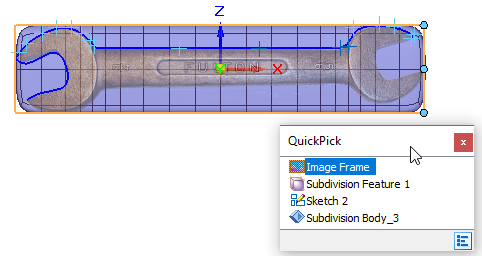
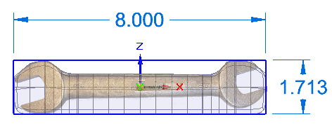
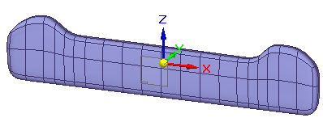
If you are using previously created 3D sketch curves, and you determine you need more vertices in one area to adjust the shape to the curve, you can use the Split command with the Chain option to select one or more faces to split. For more information, see Split subdivision model faces.
These faces need to be split to provide better control as they are fit to the curve.
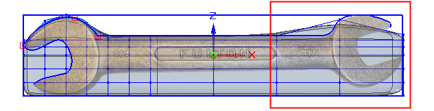
After splitting the faces, select the Align to Curve command again and select only the vertices to adjust to the sketch curve.
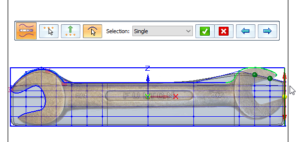
After splitting the first set of cage segments
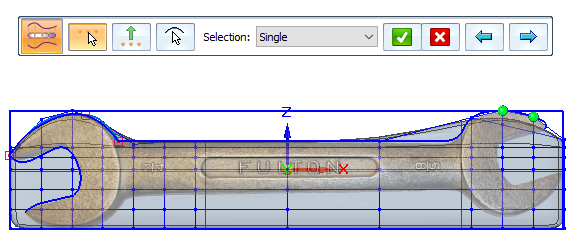
Repeat for the second set of cage faces.
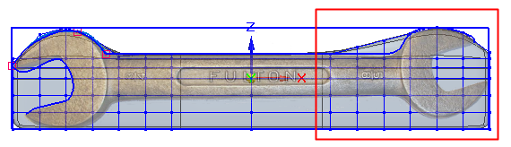
How do I
Subdivision Modeling workflowMove cage elements
Move using Quick Move
Use symmetric mode in Subdivision Modeling
Scale a subdivision model
Split subdivision model faces
Split faces with offset
Offset cage faces
Connect cage faces or edges with a bridge
Delete and fill cage faces
Learn more
Introduction to Subdivision ModelingUsing PathFinder with subdivision models
Working with cage elements
Creating subdivision features
Working with subdivision features
Moving and rotating cage elements
Look up more details
Subdivision Modeling commandBox command in Subdivision Modeling
Box command bar
Cylinder command in Subdivision Modeling
Cylinder command bar
Sphere command in Subdivision Modeling
Sphere command bar
Torus command
Torus command bar
Scale command in Subdivision Modeling
Blend command
Show Blend Values command
Split command
Split with Offset command
Bridge command
Align to Curve command
Cage Style command